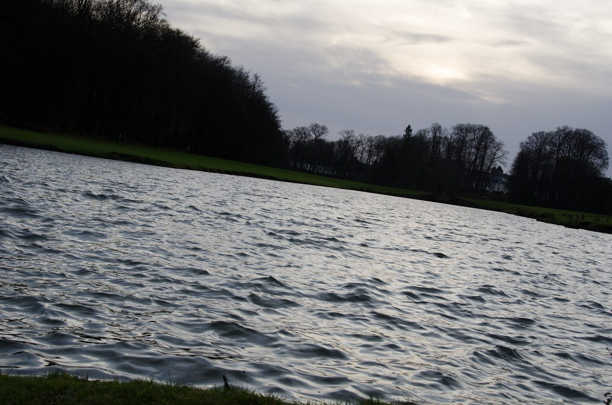
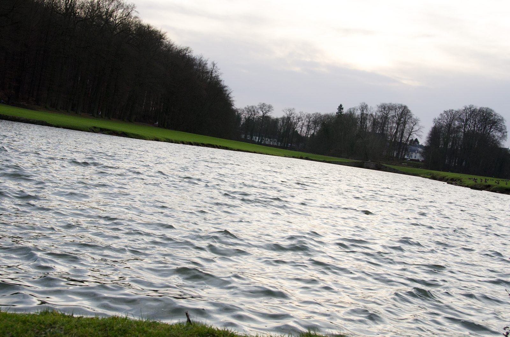
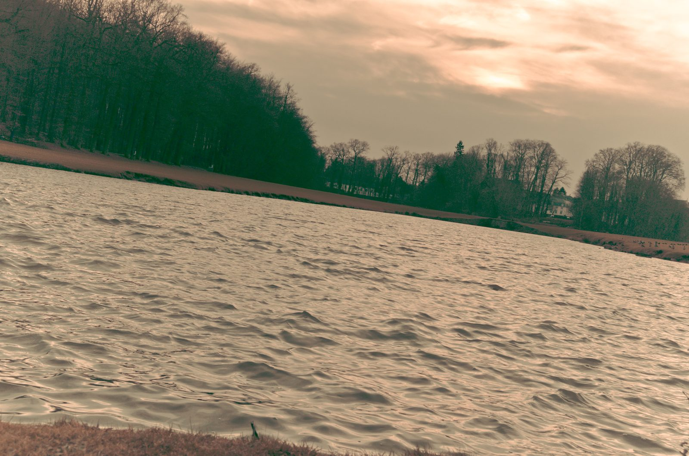
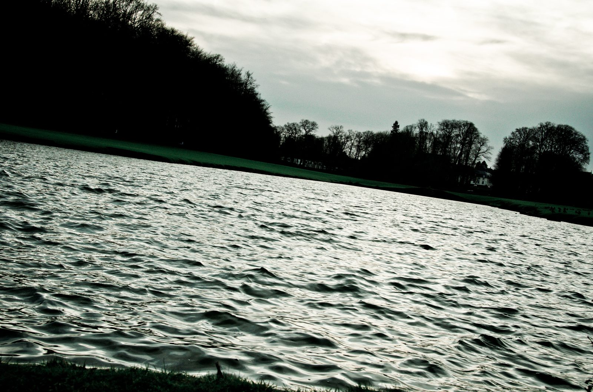
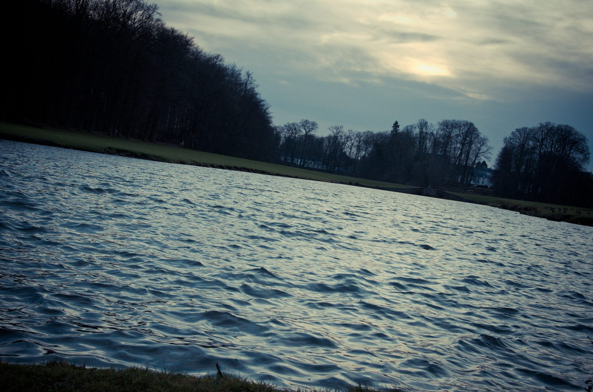
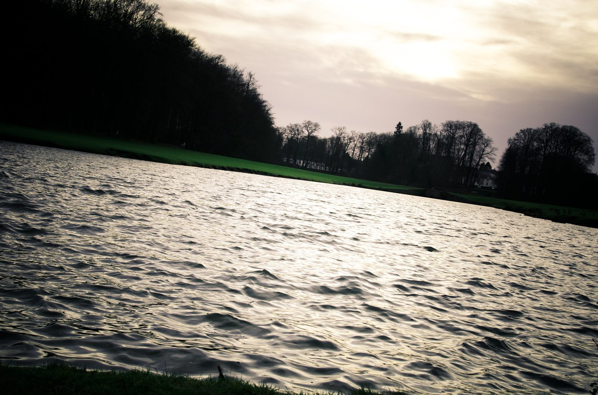

Presets dans Adobe Lightroom
This post was originally written in French.
Voilà un petit jeu amusant en photographie: les presets de rendu.
Vous prenez une photo classique (ici un photo d'un des étangs de Tervuren, prise hier après-midi), puis vous vous amusez avec Adobe Lightroom ou autres merveilles de logiciels photo. Et vous obtenez des résultats complètement différents, des ambiances étonnantes. Les goûts et les couleurs feront le reste.
Le petit Tips&Tricks du jour: vous trouvez sur le net, des tonnes de sites de presets, comme par exemple www.presetsheaven.com, et dans ce cas ci une librairie de 28 presets de Chris.
La photo original, sous exposée, fin de journée.


Un rendu classique, qui la ré-équilibre, tout en lui faisant clairement perdre son côté fin de journée. 


Un aspcct film vieilli intéressant. 

Ici c'est carrément délavé, ca perd pas mal quand même.

On accentue, les noirs sont noirs, les blancs sont blancs, sur l'eau ca fait ressortir les vagues, ca claque. Un superbe preset pour la tempête en mer à mon avis. 

Ca, c'est l'original en mieux ;-) 

Mon rendu préféré, avec l'herbe verte au fond qui ressort, j'adore.


Comments 2
Jf, 2011-01-20 19:15
Ben moi je l'ouvre avec Picasa et je clique sur I'm feeling lucky...
roulive, 2011-01-21 11:01
Aussi ;-)